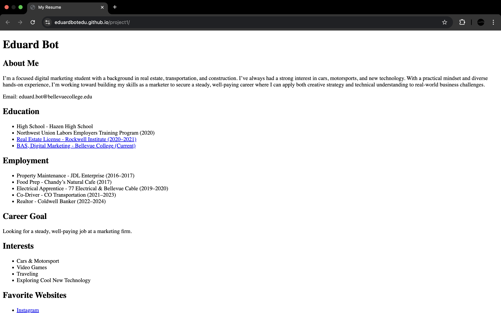

Project 1: Resume
Resume Project: A simple resume/portfolio page built with semantic HTML. Demonstrates headings, lists, links, and a clear content structure.
In the course BATECH189 - Webpage Authoring Essentials, I have expanded my knowledge of HTML and CSS — learning semantic structure, accessible markup, responsive layout techniques, and typography for web readability. Below are the projects I created during the course.
Resume Project: A simple resume/portfolio page built with semantic HTML. Demonstrates headings, lists, links, and a clear content structure.
Single-Page Layout: A single-page layout composed of five sections, with consistent styling, images, and semantic organization for accessibility and readability.
Favorite Place Page: A themed "favorite place" webpage showcasing content organization, and image integration.
E-Book Project: Converted a classic story into a web-based e-book format using HTML and CSS, with attention to typography and readability.